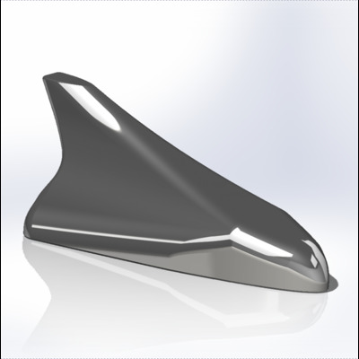

Reverse engineering · CAD · 3D printing
Replacement Antenna Cover
Recreated a missing car antenna cover and achieved a working fit on the third print.

Problem
My brother’s antenna cover broke off during winter. A replacement cost $70, and the original cover was unavailable to measure.
My contribution
I measured the roof-mounted fitting and used reference photographs to reconstruct the cover in CAD. I made test prints, adjusted the geometry, and achieved the required fit on the third print.
Result
I printed the replacement and secured it with two-part epoxy, providing an alternative to purchasing the $70 replacement part. The project demonstrates reverse engineering from incomplete references, iterative prototyping, and practical fit verification.